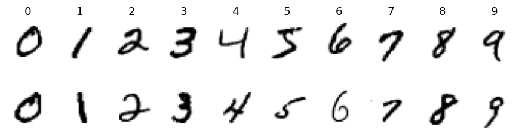
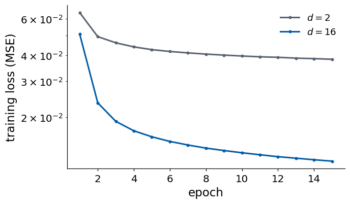
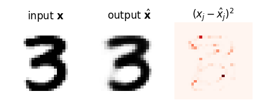
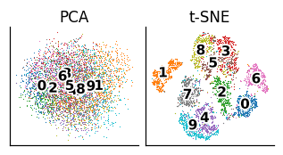
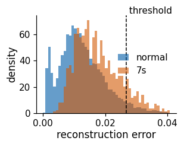
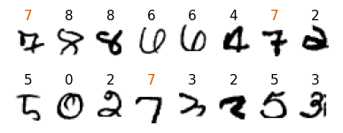
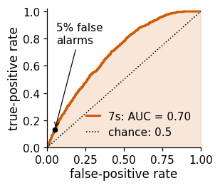
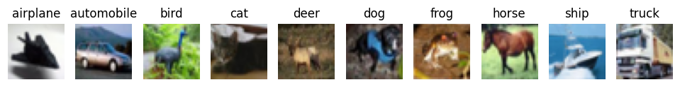
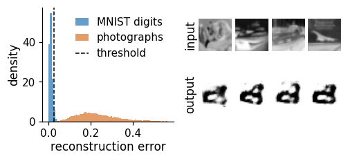

Until now every image came with a label. Here we keep only the images \(\{\mathbf x_i\}_{i=1}^n\) and let a network learn to compress them: an autoencoder squeezes each image through a narrow layer of \(d\) numbers and rebuilds it. Both what it keeps in those \(d\) numbers and what it fails to rebuild turn out to be useful.
We first define the autoencoder, its encoder, decoder and bottleneck, and its pixel-by-pixel loss, and show that a linear autoencoder rediscovers principal component analysis (PCA). Dense autoencoders on MNIST (the handwritten digits of Lab 016) follow, with \(d=2\), a latent space we can draw, and with \(d=16\); we compare them with PCA, computed in JAX and with scikit-learn. The 16 latent numbers form a new data set, which we look at with PCA and with t-SNE (t-distributed stochastic neighbour embedding, a non-linear map that keeps neighbours) and cluster with k-means (groups around \(k\) centres); both methods are derived and implemented in Lab 016. Convolutional autoencoders, a small one with \(d=2\) and a deeper one with batch normalisation and \(d=16\), use the two-dimensional structure of the images. The reconstruction error then becomes an anomaly score: an autoencoder trained on all digits except the 7s should rebuild the 7s worse, and we measure how well this finds them with the receiver operating characteristic (ROC) curve and the area under it (AUC), implemented in JAX and compared with scikit-learn. Finally, CIFAR-10 photographs (a data set of the Canadian Institute For Advanced Research: \(32\times32\) colour images in 10 classes) show the limits of a pixel-wise loss and serve as a clear anomaly for the MNIST autoencoder.
The networks are built with flax.nnx and trained with optax, with one jit-compiled JAX function per training epoch. scikit-learn provides t-SNE, k-means and the cross-checks of PCA and of the ROC analysis.
How to run this notebook in Google Colab 1. Go to https://colab.research.google.com → File → Upload notebook. The notebook runs on the CPU (central processing unit) (the first code cell sets JAX_PLATFORMS=cpu); the training sets and numbers of epochs are chosen so that it finishes in a reasonable time on a multi-core CPU. With a GPU (graphics processing unit) runtime you can delete that line and train the larger models on more data. 2. jax, flax, optax, scikit-learn and matplotlib are pre-installed in Colab; the stored outputs were produced with scikit-learn 1.6.1. 3. The notebook uses MNIST and CIFAR-10; if the files are missing, it downloads them. 4. Run the cells in order: later cells use variables defined earlier. If the state becomes inconsistent: Runtime → Restart session and run from the top.
Code
import osos.environ["JAX_PLATFORMS"] ="cpu"# run JAX on the CPU (set before importing jax)import gzip, json, pickle, tarfile, time, urllib.requestfrom functools import partialimport numpy as npimport matplotlib as mplimport matplotlib.pyplot as pltimport matplotlib.patheffects as peimport jax, jax.numpy as jnpimport optaxfrom flax import nnximport flaximport sklearn # scikit-learn: the outputs below were produced with version 1.6.1from sklearn.decomposition import PCAfrom sklearn.manifold import TSNE # t-SNE and k-means of the latent spaces (Lab 016 explains both methods)from sklearn.cluster import KMeansfrom sklearn import metrics # metrics.roc_curve, metrics.roc_auc_score (our own roc_curve is defined below)from sklearn.metrics import adjusted_rand_scoreUJBlue, UJNavy, DSOrange, UJGray ="#005CA7", "#002B5C", "#D35A05", "#5A6270"cmap10 = plt.get_cmap("tab10")mpl.rcParams.update({"font.size": 14, "axes.labelsize": 15, "axes.titlesize": 15,"xtick.labelsize": 13, "ytick.labelsize": 13, "legend.fontsize": 12,"figure.titlesize": 16, "lines.linewidth": 2.0})mpl.rcParams.update({"figure.dpi": 110, "axes.spines.top": False, "axes.spines.right": False, "legend.frameon": False})# figures for the slides are drawn at their printed size (slide text width 5.5 in) with 10-11 pt textSLIDE_RC = {"font.size": 11, "axes.labelsize": 11, "axes.titlesize": 11, "xtick.labelsize": 10, "ytick.labelsize": 10,"legend.fontsize": 10, "lines.linewidth": 1.5, "axes.linewidth": 0.8, "xtick.major.size": 3,"ytick.major.size": 3, "axes.labelpad": 2, "axes.titlepad": 4}OUTLINE = [pe.withStroke(linewidth=2.5, foreground="white")] # white edge around labels drawn on top of pointsOUT ="figures"os.makedirs(OUT, exist_ok=True)def noframe(ax): # image panels: no ticks, no frame ax.set_xticks([]); ax.set_yticks([])for sp in ax.spines.values(): sp.set_visible(False)def save(fig, name, **kw): fig.savefig(f"{OUT}/{name}", dpi=170, bbox_inches="tight", **kw)nums = {} # numbers quoted on the slidest_start = time.time()print("JAX", jax.__version__, "| flax", flax.__version__, "| optax", optax.__version__, "| scikit-learn", sklearn.__version__)print("devices:", jax.devices())
MNIST (Modified National Institute of Standards and Technology database): \(28\times28\) grayscale digits, \(60\,000\) for training and \(10\,000\) for testing. Each image is a vector \(\mathbf x\in[0,1]^{D}\) with \(D=784\) pixels. The files are in the raw IDX format, a simple binary format for multi-dimensional arrays: a short big-endian header (a magic number, then the sizes), followed by one byte per pixel. We read them with gzip and numpy only.
For the plots of latent spaces we use a fixed random subset of \(5000\) test images (X5, y5).
Code
MNIST_DIR ="data/MNIST_raw"MNIST_FILES = ["train-images-idx3-ubyte.gz", "train-labels-idx1-ubyte.gz","t10k-images-idx3-ubyte.gz", "t10k-labels-idx1-ubyte.gz"]ifnotall(os.path.exists(f"{MNIST_DIR}/{f}") for f in MNIST_FILES): os.makedirs(MNIST_DIR, exist_ok=True)for f in MNIST_FILES: urllib.request.urlretrieve(f"https://storage.googleapis.com/cvdf-datasets/mnist/{f}", f"{MNIST_DIR}/{f}")def read_idx(path):with gzip.open(path, "rb") as fh: data = fh.read() ndim = data[3] # 3 for images, 1 for labels shape = np.frombuffer(data[4:4+4* ndim], dtype=">i4") # big-endian int32 sizesreturn np.frombuffer(data[4+4* ndim:], dtype=np.uint8).reshape(shape)Xtr = read_idx(f"{MNIST_DIR}/{MNIST_FILES[0]}").reshape(-1, 784).astype(np.float32) /255.0ytr = read_idx(f"{MNIST_DIR}/{MNIST_FILES[1]}").astype(np.int32)Xte = read_idx(f"{MNIST_DIR}/{MNIST_FILES[2]}").reshape(-1, 784).astype(np.float32) /255.0yte = read_idx(f"{MNIST_DIR}/{MNIST_FILES[3]}").astype(np.int32)rng = np.random.default_rng(0)sel = rng.choice(len(Xte), 5000, replace=False) # fixed subset of test digits for plotsX5, y5 = Xte[sel], yte[sel]print("train", Xtr.shape, "test", Xte.shape, "plot subset", X5.shape, "| pixel range", Xtr.min(), Xtr.max())fig, axs = plt.subplots(2, 10, figsize=(10, 2.4))for d inrange(10):for r inrange(2): axs[r, d].imshow(Xtr[np.flatnonzero(ytr == d)[r]].reshape(28, 28), cmap="gray_r"); axs[r, d].axis("off") axs[0, d].set_title(str(d), fontsize=12)plt.show()
train (60000, 784) test (10000, 784) plot subset (5000, 784) | pixel range 0.0 1.0

Before training we move the data to the device. jnp.asarray copies a NumPy array to the default device (here the CPU; on a GPU runtime, the GPU), and we do this once for the whole training set. Later a minibatch is taken on the device by indexing, X[idx], so that on a GPU no data travel between host and device during training. JAX arrays are immutable: we never modify them in place, we create new ones.
Code
Xtr_d = jnp.asarray(Xtr) # (60000, 784) on the default deviceXte_d = jnp.asarray(Xte)X5_d = jnp.asarray(X5)print(Xtr_d.devices(), Xtr_d.dtype, f"{Xtr_d.nbytes /1e6:.0f} MB")
{CpuDevice(id=0)} float32 188 MB
2. The autoencoder
An autoencoder is two neural networks trained together:
an encoder\(E_{\boldsymbol\theta_E}:\mathbb R^{D}\to\mathbb R^{d}\) with \(D\) inputs (the size of the data, \(784\) pixels), \(d\) outputs (the latent-space size, chosen by us) and its own parameters \(\boldsymbol\theta_E\) (weights and biases). Its output \(\mathbf z=E_{\boldsymbol\theta_E}(\mathbf x)\) is the latent vector;
a decoder\(G_{\boldsymbol\theta_D}:\mathbb R^{d}\to\mathbb R^{D}\) with \(d\) inputs, \(D\) outputs and its own parameters \(\boldsymbol\theta_D\). Its output \(\hat{\mathbf x}=G_{\boldsymbol\theta_D}(\mathbf z)\) is the reconstruction.
There are no labels: every input is its own target. The loss compares each image with its reconstruction pixel by pixel, \[
\mathcal L(\boldsymbol\theta_E,\boldsymbol\theta_D)=\frac1n\sum_{i=1}^{n}\underbrace{\frac1D\sum_{j=1}^{D}\big(x_{ij}-\hat x_{ij}\big)^2}_{e(\mathbf x_i)},\qquad \hat{\mathbf x}_i=G_{\boldsymbol\theta_D}\big(E_{\boldsymbol\theta_E}(\mathbf x_i)\big),
\] with \(i\) the image and \(j\) the pixel. Two levels of averaging appear here, and both are used below:
\(e(\mathbf x)=\frac1D\lVert\mathbf x-\hat{\mathbf x}\rVert^2\) is the reconstruction error of one image, the mean of the per-pixel squared differences \((x_j-\hat x_j)^2\). A map of these \(784\) numbers shows where the image is rebuilt badly. Later, \(e(\mathbf x)\) will be our anomaly score.
\(\mathcal L\), the average of \(e\) over the images, is the mean squared error (MSE) over all \(n\cdot D\) pixel values. It is the number we minimise, and the number we report as the “test MSE”.
\(\mathcal L=0\) only if every pixel of every image is rebuilt exactly. The MSE treats each pixel as an independent Gaussian measurement with a fixed noise: up to constants, \(\mathcal L\) is the negative log-likelihood of \(p(\mathbf x\mid\mathbf z)=\prod_j\mathcal N(x_j;\hat x_j,\sigma^2)\). Other per-pixel losses are equally valid choices. An example is the binary cross-entropy (BCE), \[
\mathrm{BCE}(\mathbf x,\hat{\mathbf x})=-\frac1D\sum_{j=1}^{D}\Big[x_j\ln\hat x_j+(1-x_j)\ln(1-\hat x_j)\Big],
\] the negative log-likelihood of a model in which pixel \(j\) is “on” with probability \(\hat x_j\in(0,1)\) (a Bernoulli distribution) and the pixel value \(x_j\in[0,1]\) plays the role of the observed outcome. For fixed \(x_j\) it is smallest at \(\hat x_j=x_j\), and it punishes a confident wrong pixel (\(\hat x_j\to0\) where \(x_j=1\)) without bound, while the MSE of a single pixel never exceeds 1. We use the MSE throughout.
\(\boldsymbol\theta_E\) and \(\boldsymbol\theta_D\) are updated together by gradient descent; the gradient flows from the loss through the decoder into the encoder (backpropagation).
Bottleneck and compression
If \(d\ll D\), the decoder has to rebuild \(784\) pixels from only \(d\) numbers. The encoder must therefore put into \(\mathbf z\) the features the decoder needs most: the bottleneck is a lossy compression with ratio \(D/d\) (\(49\) for \(d=16\)). The loss does not ask for anything else, but similar images tend to get nearby latent vectors, because the decoder must rebuild them alike. The space of all \(\mathbf z\) is the latent space: a learned, low-dimensional description of the data.
Compression of this kind is part of everyday communication. Every photograph, video and voice call is compressed before it is sent: an encoder turns the signal into a few bits, these bits are transmitted, and a decoder rebuilds an approximation of the original at the other end. The JPEG and HEIC formats used by phone cameras do this with fixed, hand-designed transforms (a discrete cosine transform of small image blocks followed by quantisation, which rounds away the fine detail), not with trained networks. Learned codecs instead train both halves on data: J. Ballé, V. Laparra and E. P. Simoncelli, End-to-end optimized image compression, arXiv:1611.01704; J. Ballé et al., Variational image compression with a scale hyperprior, arXiv:1802.01436, a variational autoencoder (VAE, an autoencoder with a probabilistic latent space, Lecture 6) with a learned prior for the code; the JPEG AI standard for learned image coding, E. Alshina, J. Ascenso and T. Ebrahimi, IEEE MultiMedia 31 (2024), doi:10.1109/MMUL.2024.3485255; and learned speech coding, W. B. Kleijn et al., arXiv:2102.09660. An autoencoder is this idea with both halves learned from data, and with the short code itself, rather than the transmitted file, as the object of interest.
Linear autoencoder and PCA
Take a linear encoder and decoder, \(\mathbf z=W_E(\mathbf x-\bar{\mathbf x})\) and \(\hat{\mathbf x}=\bar{\mathbf x}+W_D\mathbf z\), with \(W_E\in\mathbb R^{d\times D}\), \(W_D\in\mathbb R^{D\times d}\) and \(\bar{\mathbf x}\) the mean image. The reconstruction \(\hat{\mathbf x}-\bar{\mathbf x}=W_DW_E(\mathbf x-\bar{\mathbf x})\) is a matrix of rank at most \(d\) applied to the centred data. Stacking the centred images as rows of \(X_c\in\mathbb R^{n\times D}\), the loss is \(\frac{1}{nD}\lVert X_c-X_cW_E^\top W_D^\top\rVert_F^2\), and the best rank-\(d\) approximation of \(X_c\) in the Frobenius norm is given by its truncated singular value decomposition (Eckart–Young theorem). At the minimum, \(W_DW_E\) is therefore the orthogonal projector onto the span of the first \(d\) principal directions\(\boldsymbol\lambda_1,\dots,\boldsymbol\lambda_d\). These are the unit eigenvectors of the covariance matrix \(C=\frac1n X_c^\top X_c\), \(C\boldsymbol\lambda_l=\sigma_l^2\boldsymbol\lambda_l\) with \(\sigma_1^2\ge\sigma_2^2\ge\dots\), and the eigenvalue \(\sigma_l^2\) is the variance of the data along \(\boldsymbol\lambda_l\). These variances carry a component index \(l\) and are unrelated to the pixel noise \(\sigma^2\) above and to the sigmoid \(\sigma(u)\) introduced below. The loss at the minimum equals the PCA reconstruction error \[
\mathcal L_{\rm PCA}(d)=\frac1D\sum_{l>d}\sigma_l^2 ,
\] the sum of the discarded variances divided by \(D\). The linear autoencoder finds the same subspace as PCA, but not the same axes: any invertible \(A\) gives the same reconstruction with \(W_E\to AW_E\), \(W_D\to W_DA^{-1}\). With non-linear activations the autoencoder can follow curved low-dimensional structure, which a projection cannot. We check both statements numerically in Section 4.
3. Autoencoders in flax.nnx
The architecture of the dense autoencoder: layers \(784\to256\to64\to d\) for the encoder and \(d\to64\to256\to784\) for the decoder, ReLU activations (rectified linear unit, \(\mathrm{ReLU}(u)=\max(0,u)\) applied to every component), and a sigmoid\(\sigma(u)=1/(1+e^{-u})\) at the output so that \(\hat x_j\in(0,1)\), like the pixels.
In flax.nnx a network is a Python class derived from nnx.Module. Its layers are created in __init__ and stored as attributes (a list of layers is wrapped in nnx.List, so that flax sees the layers inside it), and __call__ describes the forward pass. nnx.Linear(n_in, n_out, rngs=rngs) creates a weight matrix and a bias, initialised at random.
The random initialisation uses JAX’s explicit random numbers. JAX has no hidden global random state: every random operation receives a key, and the same key always gives the same numbers. nnx.Rngs(seed) is a small key generator that each layer asks for a fresh key; jax.random.key(seed) creates a key directly, and jax.random.split(key) turns one key into new independent ones. Fixing the seeds fixes the whole run.
The encoder and decoder are kept as two separate sub-networks, so that we can call them separately: model.encode(x) gives \(\mathbf z\), model.decode(z) gives \(\hat{\mathbf x}\). Every model below accepts an argument train; it matters only for batch normalisation (Section 6).
Code
class DenseAE(nnx.Module):"""Dense autoencoder: D -> hidden[0] -> hidden[1] -> d -> hidden[1] -> hidden[0] -> D."""def__init__(self, d, D=784, hidden=(256, 64), *, rngs): h1, h2 = hiddenself.enc = nnx.List([nnx.Linear(D, h1, rngs=rngs), nnx.Linear(h1, h2, rngs=rngs), nnx.Linear(h2, d, rngs=rngs)])self.dec = nnx.List([nnx.Linear(d, h2, rngs=rngs), nnx.Linear(h2, h1, rngs=rngs), nnx.Linear(h1, D, rngs=rngs)])def encode(self, x, train=False):for layer inself.enc[:-1]: x = nnx.relu(layer(x))returnself.enc[-1](x) # linear last layer: z can take any real valuedef decode(self, z, train=False):for layer inself.dec[:-1]: z = nnx.relu(layer(z))return nnx.sigmoid(self.dec[-1](z)) # pixels in (0, 1)def__call__(self, x, train=False):returnself.decode(self.encode(x, train), train)def n_params(model):returnsum(p.size for p in jax.tree_util.tree_leaves(nnx.state(model, nnx.Param)))demo = DenseAE(d=16, rngs=nnx.Rngs(0))print("parameters of the dense autoencoder (d = 16):", n_params(demo))print("z for two images:", demo.encode(X5_d[:2]).shape, "| reconstruction:", demo(X5_d[:2]).shape)
parameters of the dense autoencoder (d = 16): 437664
z for two images: (2, 16) | reconstruction: (2, 784)
Training loop
The training loop is the same for every autoencoder in this notebook, so we write it once. It combines four pieces of JAX and its libraries.
JAX transformations (jit, grad, scan) work on pure functions of arrays, while a flax model is a Python object. nnx.split(model, nnx.Param, ...) therefore separates a model into a static description of its structure (graphdef), the trainable parameters (params) and everything else (rest, e.g. the running statistics of batch normalisation), and nnx.merge(graphdef, params, rest) builds the model back. Inside the loss function we merge, run the model, and return the loss. The optimiser comes from optax, where an optimiser is a pair of pure functions: tx.init(params) creates its state (for Adam, adaptive moment estimation, the optimiser used throughout: running averages of the gradient and of its square, which set the step size of every parameter separately), and tx.update(grads, state, params) returns the parameter updates and the new state, which optax.apply_updates adds to the parameters. jax.value_and_grad turns the loss function into one that returns the loss and its gradient with respect to the first argument, params.
The fourth piece makes the loop fast. At the start of an epoch we draw a random permutation of the \(n\) training images and cut it into \(n_b\) rows of batch_size indices (the last incomplete batch is dropped). lax.scan(step, carry, idx) applies step to each row in turn, carrying the parameters and optimiser state from one minibatch to the next. Combined with jax.jit, the whole epoch, hundreds of gradient steps, is compiled by XLA (Accelerated Linear Algebra, JAX’s compiler) into a single program, with no Python loop over minibatches. The data X are an argument of the compiled function, not a constant baked into it.
Code
def mse_per_image(x, xhat):"""Reconstruction error e(x) = (1/D) sum_j (x_j - xhat_j)^2, one number per image."""return jnp.mean((x - xhat) **2, axis=tuple(range(1, x.ndim)))def train_autoencoder(model, X, epochs, seed, batch_size=256, lr=1e-3, verbose=True):"""Adam on the pixel-wise MSE; one jit-compiled lax.scan per epoch. Returns the trained model and the loss per epoch.""" graphdef, params, rest = nnx.split(model, nnx.Param, ...) tx = optax.adam(lr) opt_state = tx.init(params) n_batches = X.shape[0] // batch_sizedef loss_fn(params, rest, xb): m = nnx.merge(graphdef, params, rest, copy=True) loss = jnp.mean(mse_per_image(xb, m(xb, train=True))) _, _, new_rest = nnx.split(m, nnx.Param, ...) # updated batch statistics (if any)return loss, new_rest@jax.jitdef train_epoch(params, rest, opt_state, X, key): idx = jax.random.permutation(key, X.shape[0])[: n_batches * batch_size].reshape(n_batches, batch_size)def step(carry, batch_idx): params, rest, opt_state = carry (loss, rest), grads = jax.value_and_grad(loss_fn, has_aux=True)(params, rest, X[batch_idx]) updates, opt_state = tx.update(grads, opt_state, params)return (optax.apply_updates(params, updates), rest, opt_state), loss (params, rest, opt_state), losses = jax.lax.scan(step, (params, rest, opt_state), idx)return params, rest, opt_state, losses.mean() key, history, t0 = jax.random.key(seed), [], time.time()for ep inrange(epochs): key, sub = jax.random.split(key) params, rest, opt_state, loss = train_epoch(params, rest, opt_state, X, sub) history.append(float(loss))if verbose and (ep ==0or (ep +1) %5==0):print(f" epoch {ep +1:3d}: training loss {history[-1]:.5f} ({time.time() - t0:5.1f} s)") nnx.update(model, params, rest) # write the trained values back into the modelreturn model, np.array(history)
Trained models are evaluated with nnx.jit, the flax version of jax.jit that accepts a module as an argument. Large data sets are processed in chunks of \(1000\) images, which keeps the memory small even for the convolutional networks, and train=False is used everywhere: evaluation never changes the model.
With \(d=2\) we can draw the latent space directly. We train for \(15\) epochs with Adam (adaptive moment estimation; learning rate \(10^{-3}\), minibatches of \(256\)). The labels are not used for training; they only colour the points of the plot.
Some digits occupy their own region of the plane (look at the 0s and the 1s), others overlap. The plane is not a map with a fixed scale: the encoder is free to stretch it, and another seed rotates or mirrors it.
Sixteen latent numbers
Two numbers are a severe compression. With \(d=16\) the reconstructions become much sharper. The figure shows test digits (top), their reconstructions from \(16\) numbers (middle) and from \(2\) numbers (bottom).
epoch 15: training loss 0.01227 ( 13.0 s)
test MSE (d = 16): 0.0121 | (d = 2): 0.0389

PCA implementation in JAX
How good are these errors? PCA is the best linear compression to \(d\) numbers, so it is the natural baseline. We compute it in JAX from the eigendecomposition of the \(784\times784\) covariance matrix of the training images (jnp.linalg.eigh returns the eigenvalues in ascending order, so we reverse them), project each test image on the first \(d\) principal directions, \(w^{(l)}=\boldsymbol\lambda_l^{\top}(\mathbf x-\bar{\mathbf x})\), and rebuild it as \[
\hat{\mathbf x}^{\rm PCA}=\bar{\mathbf x}+\sum_{l=1}^{d}w^{(l)}\boldsymbol\lambda_l .
\] The test error of PCA should be close to its training error, which by Section 2 is the sum of the discarded variances \(\sigma_l^2\) divided by \(D\); the cell prints both.
Code
xbar = Xtr_d.mean(0)C = (Xtr_d - xbar).T @ (Xtr_d - xbar) / Xtr_d.shape[0] # 784 x 784 covariance matrixsig2, Lam = jnp.linalg.eigh(C)sig2, Lam = sig2[::-1], Lam[:, ::-1] # descending variances sigma_l^2, principal directions lambda_l as columnsdef pca_reconstruct(X, d): Lam_d = Lam[:, :d]return xbar + ((X - xbar) @ Lam_d) @ Lam_d.Tfor d in (2, 16): nums[f"pca{d}_test_mse"] =float(mse_per_image(X5_d, pca_reconstruct(X5_d, d)).mean()) nums[f"pca{d}_train_mse_from_eigenvalues"] =float(sig2[d:].sum() /784)print("test MSE PCA dense autoencoder")print(f"d = 2 {nums['pca2_test_mse']:.4f}{nums['ae2_test_mse']:.4f}")print(f"d = 16 {nums['pca16_test_mse']:.4f}{nums['ae16_test_mse']:.4f}")print("PCA training MSE from the discarded variances sigma_l^2, d = 2 and 16:",round(nums["pca2_train_mse_from_eigenvalues"], 4), round(nums["pca16_train_mse_from_eigenvalues"], 4))
test MSE PCA dense autoencoder
d = 2 0.0557 0.0389
d = 16 0.0268 0.0121
PCA training MSE from the discarded variances sigma_l^2, d = 2 and 16: 0.056 0.0273
The dense autoencoders reconstruct better than PCA with the same number of latent numbers, for \(d=2\) and for \(d=16\).
PCA with scikit-learn
The same baseline in scikit-learn takes three lines. PCA(n_components=16, svd_solver="full") creates the estimator; fit(X) computes the mean image mean_ and the principal components (the rows of components_) from a complete singular value decomposition of the centred training images; transform(X) projects images on the components and inverse_transform(Z) rebuilds them as \(\bar{\mathbf x}+\sum_l w^{(l)}\boldsymbol\lambda_l\). Since a model with 16 components contains the one with 2, we obtain the \(d=2\) reconstruction by keeping only the first two rows of components_.
Both programs compute the same projection, so the reconstruction errors must agree to float32 precision, and the cell asserts it. scikit-learn normalises the covariance with \(n-1\) instead of \(n\), so its explained_variance_ equals our \(\sigma_l^2\) times \(n/(n-1)\); the fractions explained_variance_ratio_ are the same.
d = 2: test MSE JAX 0.055712 | scikit-learn 0.055712
d = 16: test MSE JAX 0.026838 | scikit-learn 0.026838
fraction of variance of the first 4 components: JAX [0.09705 0.07096 0.06169 0.05389] | scikit-learn [0.09705 0.07096 0.06169 0.05389]
explained_variance_[0] / sigma_1^2 = 1.000021 (n/(n-1) = 1.000017)
Linear autoencoder
The two implementations agree, and PCA is the baseline. Next we train a linear autoencoder with \(d=2\) (no activations, no sigmoid, input centred with the mean image) and compare it with PCA in two ways: its test MSE, and the principal angles between the plane spanned by the columns of its decoder \(W_D\) and the plane of \(\boldsymbol\lambda_1,\boldsymbol\lambda_2\). If \(Q_{\rm AE}\) and \(Q_{\rm PCA}\) are orthonormal bases of the two planes, the singular values of \(Q_{\rm AE}^\top Q_{\rm PCA}\) are the cosines of the principal angles; both angles are zero exactly when the planes coincide.
Code
class LinearAE(nnx.Module):"""z = W_E (x - xbar), xhat = xbar + W_D z (no biases, no activations)."""def__init__(self, d, mean, D=784, *, rngs):self.mean = nnx.Variable(mean) # a fixed, non-trainable array stored in the modelself.WE = nnx.Linear(D, d, use_bias=False, rngs=rngs)self.WD = nnx.Linear(d, D, use_bias=False, rngs=rngs)def encode(self, x, train=False): returnself.WE(x -self.mean[...])def decode(self, z, train=False): returnself.mean[...] +self.WD(z)def__call__(self, x, train=False): returnself.decode(self.encode(x))lin2, hist_lin = train_autoencoder(LinearAE(2, xbar, rngs=nnx.Rngs(2)), Xtr_d, epochs=30, seed=2, lr=3e-3, verbose=False)nums["linear_ae2_test_mse"] =float(errors(lin2, X5_d).mean())WD = lin2.WD.kernel[...].T # (784, 2): the decoder columns span the AE planeQ_ae, _ = jnp.linalg.qr(WD)cosines = jnp.linalg.svd(Q_ae.T @ Lam[:, :2], compute_uv=False)angles = np.degrees(np.arccos(np.clip(np.asarray(cosines), -1, 1)))nums["linear_ae2_principal_angles_deg"] = [float(a) for a in angles]print(f"linear AE (d = 2): test MSE {nums['linear_ae2_test_mse']:.4f} PCA (d = 2): {nums['pca2_test_mse']:.4f}")print("principal angles between the linear-AE plane and the PCA plane (degrees):", np.round(angles, 2))print("first decoder column . lambda_1 and lambda_2 (normalised):", np.round(np.asarray(WD[:, 0] / jnp.linalg.norm(WD[:, 0]) @ Lam[:, :2]), 3))
linear AE (d = 2): test MSE 0.0557 PCA (d = 2): 0.0557
principal angles between the linear-AE plane and the PCA plane (degrees): [0.76 0.97]
first decoder column . lambda_1 and lambda_2 (normalised): [-0.494 -0.869]
The linear autoencoder reaches the PCA error and its plane is (up to a small angle) the plane of the first two principal components; its two decoder columns, however, are not \(\boldsymbol\lambda_1\) and \(\boldsymbol\lambda_2\) themselves, only some basis of the same plane. The non-linear autoencoder with the same \(d\) goes below the PCA error: it compresses better than any projection.
The mean image is stored in the model as an nnx.Variable, not an nnx.Param. Our training function differentiates only nnx.Param, so the mean stays fixed; variable[...] reads its value.
Exercise
Train the linear autoencoder with \(d=16\) and compare with pca16_test_mse. Then add a ReLU between its encoder and decoder layers: what happens to the error?
One digit through the autoencoder
The images of the autoencoder diagram on the slides: a clearly written test digit (the 3 that the \(d=16\) autoencoder rebuilds best), its \(16\) latent numbers, and its reconstruction.
The per-pixel squared differences \((x_j-\hat x_j)^2\) of this digit show where the reconstruction fails; their mean is the reconstruction error \(e(\mathbf x)\) of the image, and the mean of \(e\) over all images is the loss \(\mathcal L\).
Code
err_map = (X5[k3] - x_out) **2with plt.rc_context(SLIDE_RC): fig, axs = plt.subplots(1, 3, figsize=(3.74, 1.45))for a, im, t, cm inzip(axs, [X5[k3], x_out, err_map], [r"input $\mathbf{x}$", r"output $\hat{\mathbf{x}}$", r"$(x_j - \hat{x}_j)^2$"], ["gray_r", "gray_r", "Reds"]): a.imshow(im.reshape(28, 28), cmap=cm); a.set_title(t); a.axis("off") plt.tight_layout(pad=0.2, w_pad=0.6); save(fig, "gen_ae_loss_map.png"); plt.show()print("mean of the error map (the reconstruction error of this image):", round(float(err_map.mean()), 4))

mean of the error map (the reconstruction error of this image): 0.0042
5. Latent space
Every test image is now described by \(16\) latent numbers. We treat them as a new data set: a linear projection with PCA (computed in JAX with a singular value decomposition, SVD, of the centred latent vectors) and a non-linear map with t-SNE. The colours are the true digits, used only for plotting.
Lab 016 implemented t-SNE and k-means in JAX and compared them with scikit-learn; here we use the scikit-learn estimators directly. TSNE(2, perplexity=30, init="pca", random_state=0).fit_transform(Z) returns the two-dimensional map, and KMeans(10, n_init=10, random_state=0).fit(Z).labels_ the cluster of every point, the best of 10 k-means++ starts. t-SNE places the points in the plane so that the probabilities of being neighbours, computed from the distances in the 16-dimensional space and in the plane, agree as well as possible (it minimises the Kullback–Leibler divergence between the two sets of probabilities). k-means splits the points into \(k\) groups \(S_c\) with centres \(\boldsymbol\mu_c\) so that the sum of squared distances \(\sum_c\sum_{i\in S_c}\lVert\mathbf z_i-\boldsymbol\mu_c\rVert^2\) is as small as possible.
The agreement of a clustering with the true digits is measured by the adjusted Rand index (ARI), adjusted_rand_score(labels, clusters). The Rand index RI is the fraction of pairs of samples on which two partitions agree (both partitions put the pair in the same group, or both in different groups). Even random groups agree on many pairs, so the ARI corrects for chance, \(\mathrm{ARI}=(\mathrm{RI}-\mathbb E[\mathrm{RI}])/(1-\mathbb E[\mathrm{RI}])\), with \(\mathbb E[\mathrm{RI}]\) the mean of RI over random partitions with the same group sizes: ARI \(=1\) for a perfect match and about \(0\) for a random assignment (Lab 016, Section 4.6).
The question is whether the digits form clusters in the latent space itself. We run k-means (\(k=10\)) directly on the \(16\) latent numbers and on their t-SNE map, and compare with k-means on the pixels (on \(50\) PCA components).
Code
def pca_2d(Z):"""Projection on the first two principal components, via the SVD of the centred data (in JAX).""" Zc = jnp.asarray(Z) - jnp.mean(jnp.asarray(Z), 0) _, s, Vt = jnp.linalg.svd(Zc, full_matrices=False)return np.asarray(Zc @ Vt[:2].T), float((s[:2] **2).sum() / (s **2).sum())def tsne(Z):return TSNE(2, perplexity=30, init="pca", random_state=0).fit_transform(np.asarray(Z))def kmeans_ari(Z, labels):returnfloat(adjusted_rand_score(labels, KMeans(10, n_init=10, random_state=0).fit(np.asarray(Z)).labels_))def plot_two_maps(P_left, P_right, titles, labels, names=None): fig, axs = plt.subplots(1, 2, figsize=(11, 4.6))for a, P2, t inzip(axs, [P_left, P_right], titles):for c inrange(10): m = labels == c a.scatter(P2[m, 0], P2[m, 1], s=3, color=cmap10(c), label=(names[c] if names elsestr(c))) a.set_title(t, fontsize=13); a.set_xticks([]); a.set_yticks([]) axs[1].legend(markerscale=4, fontsize=11, ncol=2, loc="upper left", bbox_to_anchor=(1.0, 1)) plt.tight_layout()return figL16 = encode(ae16, X5_d) # (5000, 16)L16_pca, _ = pca_2d(L16)L16_tsne = tsne(L16)with plt.rc_context(SLIDE_RC): fig, axs = plt.subplots(1, 2, figsize=(2.75, 1.45))for a, P2, t inzip(axs, [L16_pca, L16_tsne], ["PCA", "t-SNE"]):for c inrange(10): m = y5 == c; a.scatter(P2[m, 0], P2[m, 1], s=0.6, color=cmap10(c), lw=0)for c inrange(10): a.text(*np.median(P2[y5 == c], 0), str(c), fontsize=10, weight="bold", ha="center", va="center", path_effects=OUTLINE) a.set_title(t); a.set_xticks([]); a.set_yticks([]) plt.tight_layout(pad=0.2, w_pad=0.5); save(fig, "gen_ae_latent16_maps.png"); plt.show()Z50 = np.asarray((X5_d - xbar) @ Lam[:, :50]) # the pixels, on 50 principal componentsnums["pixels_pca50_kmeans_ari"] = kmeans_ari(Z50, y5)nums["ae16_latent_kmeans_ari_direct"] = kmeans_ari(L16, y5)nums["ae16_latent_kmeans_ari_tsne"] = kmeans_ari(L16_tsne, y5)print("k-means (k = 10), adjusted Rand index with the true digits:")print(f" pixels, 50 PCA components : {nums['pixels_pca50_kmeans_ari']:.3f}")print(f" 16 latent numbers, directly: {nums['ae16_latent_kmeans_ari_direct']:.3f}")print(f" t-SNE map of the 16 latent numbers: {nums['ae16_latent_kmeans_ari_tsne']:.3f}")

k-means (k = 10), adjusted Rand index with the true digits:
pixels, 50 PCA components : 0.384
16 latent numbers, directly: 0.284
t-SNE map of the 16 latent numbers: 0.696
In the PCA projection the digits overlap: they differ along many of the \(16\) directions, and any two of them show only part of it. The t-SNE map keeps the neighbours of each point and shows groups. k-means directly in the latent space does not recover the digits better than on the pixels: the digits are kept in the latent space, but not as the round, equally sized groups that k-means looks for.
Exercise
Repeat the analysis with the latent space of the \(d=2\) autoencoder (L2), where no projection is needed. Is k-means better or worse there?
6. Convolutional autoencoders
A small convolutional autoencoder, \(d=2\)
A dense layer sees an image as a flat list of \(784\) numbers: it does not know which pixels are neighbours. A convolutional encoder uses the 2D structure, like the convolutional neural networks (CNNs) of Lecture 4. Here two convolutions with \(3\times3\) kernels and stride \(2\) (\(28\to14\to7\) pixels, \(16\) and \(32\) channels), then dense layers \(32\cdot7\cdot7\to128\to d\). The decoder mirrors it: dense layers back to \(32\cdot7\cdot7\), then two transposed convolutions with stride \(2\) (\(7\to14\to28\)), the last one with a single channel and a sigmoid.
nnx.Conv expects images with the channels last, of shape (batch, height, width, channels) (NHWC: number of images, height, width, channels), unlike PyTorch’s NCHW, which puts the channels before the height; our MNIST images become (n, 28, 28, 1) with a reshape, which costs nothing. nnx.ConvTranspose(..., strides=2, padding="SAME") doubles the height and width exactly.
On a CPU a convolutional layer costs far more arithmetic per image than a dense layer of similar size, and its gradient even more. To keep the notebook fast we use few channels and train the convolutional models on a random subset of the training images, for fewer epochs (N_CONV, EPOCHS_CONV below). To make up for the fewer images we use smaller minibatches of \(64\): the same arithmetic per epoch, but four times as many gradient steps. The dense autoencoders above used all \(60\,000\) images.
With the same two latent numbers the convolutional encoder gives the higher ARI (printed above), although it saw only a third of the training images and has the larger test MSE: it compares neighbouring pixels, as a CNN does, and builds its two numbers from local strokes rather than from individual pixel positions. The colours are not used in training, so a better ARI is a by-product, not a goal, of the reconstruction loss.
A deeper convolutional autoencoder, \(d=16\)
A deeper model: three convolutions (\(8\), \(16\), \(32\) channels, the last two with stride \(2\)), each followed by batch normalisation and ReLU, then dense layers \(32\cdot7\cdot7\to128\to16\). To save CPU time it is trained on a smaller subset (N_DEEP images, EPOCHS_DEEP epochs). The decoder mirrors it with transposed convolutions and ends with a \(3\times3\) convolution to one channel and a sigmoid.
Batch normalisation rescales every channel to zero mean and unit variance over the current minibatch, then applies a learned scale and shift. During training it uses the minibatch statistics and updates running averages of them; at evaluation it uses the running averages, so that the output for one image does not depend on the other images in the batch. In flax the running averages are nnx.BatchStat variables, not parameters: they are not differentiated, they are part of rest in our training function and are carried through lax.scan next to the parameters. The argument train selects the mode (use_running_average=not train).
Code
class DeepConvAE(nnx.Module):def__init__(self, d=16, ch=(8, 16, 32), hidden=128, *, rngs): c1, c2, c3 = chself.c3 = c3 conv =lambda i, o, s: nnx.Conv(i, o, (3, 3), strides=s, padding=1, rngs=rngs) tconv =lambda i, o: nnx.ConvTranspose(i, o, (3, 3), strides=2, padding="SAME", rngs=rngs)self.enc_convs = nnx.List([conv(1, c1, 1), conv(c1, c2, 2), conv(c2, c3, 2)]) # 28 -> 28 -> 14 -> 7self.enc_bns = nnx.List([nnx.BatchNorm(c, rngs=rngs) for c in (c1, c2, c3)])self.e1, self.e2 = nnx.Linear(c3 *7*7, hidden, rngs=rngs), nnx.Linear(hidden, d, rngs=rngs)self.d1, self.d2 = nnx.Linear(d, hidden, rngs=rngs), nnx.Linear(hidden, c3 *7*7, rngs=rngs)self.dec_tconvs = nnx.List([tconv(c3, c2), tconv(c2, c1)]) # 7 -> 14 -> 28self.dec_bns = nnx.List([nnx.BatchNorm(c, rngs=rngs) for c in (c2, c1)])self.out = conv(c1, 1, 1)def encode(self, x, train=False):for c, bn inzip(self.enc_convs, self.enc_bns): x = nnx.relu(bn(c(x), use_running_average=not train))returnself.e2(nnx.relu(self.e1(x.reshape(x.shape[0], -1))))def decode(self, z, train=False): h = nnx.relu(self.d2(nnx.relu(self.d1(z)))).reshape(-1, 7, 7, self.c3)for t, bn inzip(self.dec_tconvs, self.dec_bns): h = nnx.relu(bn(t(h), use_running_average=not train))return nnx.sigmoid(self.out(h))def__call__(self, x, train=False):returnself.decode(self.encode(x, train), train)N_DEEP, EPOCHS_DEEP =12000, 6dcae, hist_d = train_autoencoder(DeepConvAE(16, rngs=nnx.Rngs(4)), Xtr_img[sub[:N_DEEP]], epochs=EPOCHS_DEEP, seed=4, batch_size=64)print("parameters:", n_params(dcae))LD = encode(dcae, X5_img)nums["dcae16_test_mse"] =float(errors(dcae, X5_img).mean())LD_pca, nums["dcae16_pca2_var"] = pca_2d(LD)LD_tsne = tsne(LD)nums["dcae16_kmeans_ari_direct"] = kmeans_ari(LD, y5)nums["dcae16_kmeans_ari_tsne"] = kmeans_ari(LD_tsne, y5)fig = plot_two_maps(LD_pca, LD_tsne, ["PCA of the 16D latent vectors (deep conv.)", "t-SNE of the 16D latent vectors (deep conv.)"], y5)plt.show()print({k: round(nums[k], 4) for k in ["ae16_test_mse", "dcae16_test_mse", "dcae16_pca2_var","ae16_latent_kmeans_ari_direct", "dcae16_kmeans_ari_direct","ae16_latent_kmeans_ari_tsne", "dcae16_kmeans_ari_tsne"]})
Compare the two \(d=16\) models: the dense one (all training images, \(15\) epochs) and the convolutional one (a subset, fewer epochs). The test MSE measures how well each rebuilds the pixels, the ARI how well its latent space groups the digits; the two need not go together, since the loss rewards rebuilding pixels, not separating digits.
Exercises
Train DeepConvAE with more channels, e.g. ch=(32, 64, 128), on all \(60\,000\) images (best on a GPU). How do the test MSE and the ARI change?
Remove the batch normalisation layers from DeepConvAE (replace bn(...) by the identity) and train again with the same seed. How do the training curve and the test MSE change?
7. Anomaly detection
An autoencoder trained only on normal data rebuilds similar samples well and unusual ones badly. The reconstruction error \[
s(\mathbf x)=e(\mathbf x)=\frac1D\big\lVert\mathbf x-G_{\boldsymbol\theta_D}\big(E_{\boldsymbol\theta_E}(\mathbf x)\big)\big\rVert^2
\] is therefore an anomaly score: the larger, the more surprising the sample for the model. No example of an anomaly is needed for training. To turn the score into a decision we choose a threshold\(\tau\) and flag every sample with \(s(\mathbf x)>\tau\). A natural choice uses only normal data: \(\tau\) = the \(95\)th percentile of the scores of normal samples, so that \(5\%\) of the normal samples are flagged (the false-alarm rate).
To test this idea we train the dense autoencoder (\(d=16\), the same architecture and training as above) on all training digits except the 7s. For the network every 7 is then an unknown kind of image. We compute the score of all \(10\,000\) test digits and ask whether the 7s stand out.
Code
HELD_OUT =7aeA, _ = train_autoencoder(DenseAE(d=16, rngs=nnx.Rngs(5)), jnp.asarray(Xtr[ytr != HELD_OUT]), epochs=15, seed=5)errA = errors(aeA, Xte_d) # anomaly score of every test digitis7 = yte == HELD_OUTthr =float(np.percentile(errA[~is7], 95)) # flags 5% of the normal test digitsnums["anom_err_normal"] =float(errA[~is7].mean())nums["anom_err_seven"] =float(errA[is7].mean())nums["anom_threshold"] = thrnums["anom_frac7_flagged"] =float((errA[is7] > thr).mean())top = np.argsort(errA)[::-1]nums["anom_top16_sevens"] =int(is7[top[:16]].sum())nums["anom_top100_sevens"] =int(is7[top[:100]].sum())print(f"mean error: normal digits {nums['anom_err_normal']:.4f} | 7s {nums['anom_err_seven']:.4f}")print(f"threshold (95th percentile of normal digits) {thr:.4f}: flags {nums['anom_frac7_flagged']:.3f} of the 7s")print(f"fraction of 7s in the test set {is7.mean():.3f} | 7s among the 16 / 100 largest errors: "f"{nums['anom_top16_sevens']} / {nums['anom_top100_sevens']}")with plt.rc_context(SLIDE_RC): fig, ax = plt.subplots(figsize=(2.75, 1.95)) bins = np.linspace(0, np.percentile(errA, 99.5), 50) ax.hist(errA[~is7], bins=bins, density=True, alpha=0.6, color=UJBlue, label="normal") ax.hist(errA[is7], bins=bins, density=True, alpha=0.6, color=DSOrange, label="7s") ax.axvline(thr, color="k", ls="--", lw=1) ax.text(thr, 1.0, " threshold", transform=ax.get_xaxis_transform(), ha="left", va="bottom", fontsize=10) ax.set_xlabel("reconstruction error"); ax.set_ylabel("density"); ax.legend(handlelength=1.2, loc="center right") ax.ticklabel_format(axis="x", style="plain"); ax.set_xticks([0, 0.02, 0.04]) save(fig, "gen_anomaly_hist.png"); plt.show()with plt.rc_context(SLIDE_RC): fig, axs = plt.subplots(2, 8, figsize=(4.29, 1.5))for j, a inenumerate(axs.ravel()): t = top[j] a.imshow(Xte[t].reshape(28, 28), cmap="gray_r"); noframe(a) a.set_title(f"{yte[t]}", fontsize=10, pad=2, color=DSOrange if is7[t] else"k") plt.subplots_adjust(wspace=0.12, hspace=0.35) save(fig, "gen_anomaly_top.png"); plt.show()
epoch 1: training loss 0.05458 ( 1.1 s)
epoch 5: training loss 0.01750 ( 3.6 s)
epoch 10: training loss 0.01444 ( 6.7 s)
epoch 15: training loss 0.01303 ( 10.0 s)
mean error: normal digits 0.0128 | 7s 0.0179
threshold (95th percentile of normal digits) 0.0268: flags 0.130 of the 7s
fraction of 7s in the test set 0.103 | 7s among the 16 / 100 largest errors: 3 / 22


The two histograms overlap strongly. A 7 shares strokes with 1s and 9s, which the network has seen, so many 7s are rebuilt well. Among the digits with the largest error some are 7s, others are badly written digits of the trained classes: for the autoencoder these are anomalies too.
ROC curve and AUC
Every threshold \(\tau\) gives one decision rule. For each we count
the true-positive rate\(\mathrm{TPR}(\tau)=\frac{\#\{\text{anomalies with } s>\tau\}}{\#\{\text{anomalies}\}}\): the fraction of anomalies (here the 7s) found;
the false-positive rate\(\mathrm{FPR}(\tau)=\frac{\#\{\text{normal samples with } s>\tau\}}{\#\{\text{normal samples}\}}\): the fraction of normal samples flagged, the false alarms.
Lowering \(\tau\) from \(+\infty\) to \(-\infty\) traces the ROC curve (receiver operating characteristic) \(\big(\mathrm{FPR}(\tau),\mathrm{TPR}(\tau)\big)\) from \((0,0)\) to \((1,1)\). A useless score lies on the diagonal (as many false alarms as hits); a perfect one goes straight up to \(\mathrm{TPR}=1\) at \(\mathrm{FPR}=0\).
The AUC is the area under the ROC curve. It does not depend on any threshold, and it has a simple probabilistic meaning: if \(s_+\) is the score of a randomly chosen anomaly and \(s_-\) that of a randomly chosen normal sample, \[
\mathrm{AUC}=P(s_+>s_-)+\tfrac12P(s_+=s_-) =\frac{1}{n_+n_-}\sum_{a\in+}\sum_{b\in-}\Big[\mathbb 1(s_a>s_b)+\tfrac12\mathbb 1(s_a=s_b)\Big].
\]\(\mathrm{AUC}=\tfrac12\) for chance, \(1\) for a perfect separation. (This is the Mann–Whitney \(U\) statistic divided by \(n_+n_-\).)
ROC implementation in JAX
Our JAX implementation of the ROC curve sorts the samples by decreasing score: walking down the sorted list is lowering the threshold, and the cumulative counts of anomalies and normal samples give TPR and FPR. Samples with equal scores share one threshold and give one point. The area follows from the trapezoidal rule, and we compare it with the pairwise formula, a single vectorised comparison of all \(n_+\times n_-\) pairs; the two must agree, since the trapezoidal area of the ROC curve is exactly the Mann–Whitney statistic.
AUC (trapezoid on the ROC curve) = 0.6958 | AUC (all 1028 x 8972 pairs) = 0.6958

The black dot is the decision rule of the histogram: at \(5\%\) false alarms it finds the fraction of 7s printed above. An AUC of about \(0.7\) means that a randomly chosen 7 has a larger reconstruction error than a randomly chosen normal digit in about seven cases out of ten: a real signal, but a weak one.
ROC curve and AUC with scikit-learn
The same analysis is available in sklearn.metrics. roc_curve(y_true, y_score) takes the true binary labels (1 for the positive class, here the anomalies) and the scores, and returns three arrays: the FPR, the TPR and the thresholds, in decreasing order of the threshold, starting from the point \((0,0)\) with the threshold \(+\infty\). By default (drop_intermediate=True) it removes points that lie on a straight segment of the curve and do not change its shape; with drop_intermediate=False it keeps one point per distinct score, which is exactly our construction. roc_auc_score(y_true, y_score) returns the area.
Both are deterministic functions of the scores, so they must agree with ours exactly (up to float32 rounding of our cumulative sums), and the cell asserts it: the full curves point by point and the AUC.
Code
fpr_sk, tpr_sk, thr_sk = metrics.roc_curve(is7, errA, drop_intermediate=False)auc_sk =float(metrics.roc_auc_score(is7, errA))print(f"points on the curve: JAX {len(fpr)} | scikit-learn {len(fpr_sk)}"f" (with drop_intermediate=True: {len(metrics.roc_curve(is7, errA)[0])})")print(f"largest difference of the curves: FPR {np.abs(fpr_sk - fpr).max():.1e}, TPR {np.abs(tpr_sk - tpr).max():.1e}")print(f"AUC: JAX {nums['anom_auc']:.6f} | scikit-learn {auc_sk:.6f}")assertlen(fpr_sk) ==len(fpr) and np.allclose(fpr_sk, fpr, atol=1e-5) and np.allclose(tpr_sk, tpr, atol=1e-5)assertabs(auc_sk - nums["anom_auc"]) <1e-5
points on the curve: JAX 9998 | scikit-learn 9998 (with drop_intermediate=True: 1799)
largest difference of the curves: FPR 3.8e-08, TPR 3.0e-08
AUC: JAX 0.695764 | scikit-learn 0.695764
Exercises
Hold out another digit instead of the 7 (change HELD_OUT). Which digits are easy anomalies and which are hard? Can you relate this to the shapes of the digits?
Use the deep convolutional autoencoder for the anomaly score. Does a model that rebuilds digits better also detect the 7s better?
8. CIFAR-10: photographs
CIFAR-10 (Lecture 4) contains \(32\times32\) colour photographs in \(10\) classes, \(50\,000\) for training and \(10\,000\) for testing, so \(D=32\cdot32\cdot3=3072\). Each image is stored as one row of \(3072\) bytes: first the \(1024\) red values, then the green, then the blue, each in row-major order. The files are Python pickles; we read them with pickle and numpy.
Code
CIFAR_DIR ="data/cifar-10-batches-py"ifnot os.path.isdir(CIFAR_DIR): os.makedirs("data", exist_ok=True) urllib.request.urlretrieve("https://www.cs.toronto.edu/~kriz/cifar-10-python.tar.gz", "data/cifar-10-python.tar.gz")with tarfile.open("data/cifar-10-python.tar.gz") as tf: tf.extractall("data")def cifar_batch(name):withopen(os.path.join(CIFAR_DIR, name), "rb") as fh: d = pickle.load(fh, encoding="bytes")return d[b"data"].astype(np.float32) /255.0, np.array(d[b"labels"])parts = [cifar_batch(f"data_batch_{i}") for i inrange(1, 6)]Ctr = np.concatenate([p[0] for p in parts]); cytr = np.concatenate([p[1] for p in parts])Cte, cyte = cifar_batch("test_batch")cnames = ["airplane", "automobile", "bird", "cat", "deer", "dog", "frog", "horse", "ship", "truck"]to_img =lambda v: v.reshape(3, 32, 32).transpose(1, 2, 0) # (3072,) -> (32, 32, 3) for plottingrc = np.random.default_rng(5)csel = rc.choice(len(Cte), 5000, replace=False)C5, cy5 = Cte[csel], cyte[csel]print("train", Ctr.shape, "test", Cte.shape)fig, axs = plt.subplots(1, 10, figsize=(11, 1.6))for c inrange(10): axs[c].imshow(to_img(Ctr[np.flatnonzero(cytr == c)[0]])); axs[c].set_title(cnames[c], fontsize=11); axs[c].axis("off")plt.show()
train (50000, 3072) test (10000, 3072)

An autoencoder on CIFAR-10
The same dense architecture, scaled up: \(3072\to512\to128\to32\) and back, \(10\) epochs. Reconstructions from \(32\) latent numbers, and a t-SNE map of the latent vectors of \(5000\) test photographs (colours: classes, used only for plotting).
The reconstructions keep the colours and the coarse layout of the scene but lose the details, and the classes do not separate in the latent space: two photographs of the same class can differ in almost every pixel (pose, background, lighting), and a pixel-wise loss puts them far apart.
Exercise
Compare with MNIST: why are the CIFAR-10 classes so much harder to separate from the pixels? Train the CNN of Lecture 4 and run t-SNE on its last hidden layer instead.
Anomaly detection: a clear case
The 7s were a subtle anomaly. Now a very different input: the dense autoencoder trained on all MNIST digits (\(d=16\), ae16 from Section 4) receives CIFAR-10 photographs, converted to grayscale with the luminance weights \(0.299R+0.587G+0.114B\) and resized from \(32\times32\) to \(28\times28\) with jax.image.resize (bilinear interpolation). The normal samples are the \(10\,000\) MNIST test digits, the anomalies the first \(5000\) CIFAR-10 test photographs; the threshold again flags \(5\%\) of the normal samples. The cell also compares our AUC with metrics.roc_auc_score.
threshold 0.0256 flags 0.9984 of the photographs
AUC (trapezoid) 0.9997 | AUC (pairs) 0.9997
median error: digits 0.0110 | photographs 0.2191
AUC: JAX 0.999705 | scikit-learn 0.999705

The two populations barely overlap, and the reconstructions of the photographs look like blurred digits: the decoder can only produce what it has learned. An anomaly far from the training data is easy to detect, one that resembles it is hard; the two ROC curves side by side show the difference.
The autoencoder trained on all digits rebuilds a digit well: small reconstruction error. A photograph is unlike anything it was trained on: the decoder can only produce digit-like images, the error is large, and the photograph is flagged. We show a typical case of each: the digit and the photograph whose errors are the medians of their groups. The two error maps share one colour scale.
Feed the MNIST autoencoder other inputs: digits rotated by \(90°\), inverted images \(1-\mathbf x\), uniform noise, or the Fashion-MNIST clothes. Order them by their AUC against the MNIST test digits.
The reconstruction error is not the only possible score. Fit a Gaussian to the latent vectors \(\mathbf z\) of the training digits and use the Mahalanobis distance of \(\mathbf z\) as the score. Is it better for the 7s?
9. Summary
An autoencoder is an encoder and a decoder trained together to rebuild their input through a bottleneck of \(d\) numbers. The loss is the pixel-wise MSE, so no labels are needed, and the bottleneck acts as a learned, lossy compression. A linear autoencoder spans the PCA subspace, while non-linear layers compress better than any projection.
The latent space keeps the structure of the data, in the sense that similar images get nearby \(\mathbf z\), but its geometry is not designed for clustering; convolutional encoders, which see neighbouring pixels, separate the digits better. The reconstruction error of an autoencoder trained on normal data is an anomaly score. The ROC curve shows all thresholds at once, and the AUC is the probability that an anomaly scores higher than a normal sample. Anomalies far from the training data, such as photographs for an MNIST autoencoder, are easy to detect; anomalies that resemble the training data, such as a held-out digit, are hard.